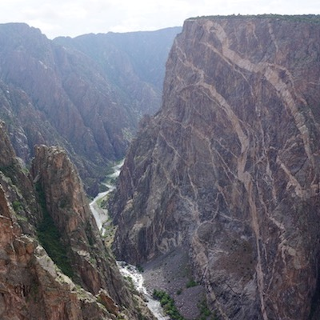
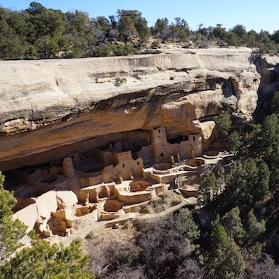
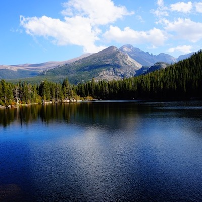
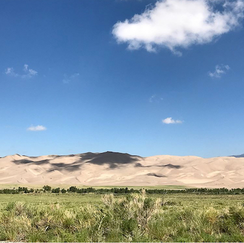

Black Canyon of the Gunnison National Park
The Black Canyon of the Gunnison National Park is home to the Black Canyon, a magnificent canyon in Western Colorado. The canyon was carved out by the Gunnison River over 2 million years. Today is a popular destination and is managed by the National Park Service. The Black Canyon became a national park in 1999 and sees roughly 200,000 visitors a year. The canyon is famous for its very steep walls and is incredibly narrow in spots. Because of this, little sunlight makes its way to the bottom of the canyon, giving the canyon its name.
The park is a great destination in Colorado. Popular activities include:
- Camping
- Hiking
- Rock Climbing
Mesa Verde National Park
Mesa Verde National Park is in the southwestern corner of Colorado and home to ancient archaeological sites. The National Park was established in 1906 and is the largest archaeological preserve in the US. It is home to more than 4,000 sites, including 600 cliff dwellings. These unique structures were built into the high cliffs in caves or naturally occurring recesses in the rock face. The area had been home to ancient civilizations for centuries, including the Anasazi Native Americans.
Today the park sees roughly 500,000 visitors per year. Several large cliff dwellings have great vantage points and a few allow visitors inside. Mesa Verde is a great glimpse into the history of North America and a top destination in Colorado.
Rocky Mountain National Park
Rocky Mountain National Park, in the heart of the Colorado Rocky Mountains, covers 415 square miles of alpine terrain. The park is home to large population of wildlife, including bear, elk, mountain lions, and moose. Located just to the northwest of Denver, the park sees over 4,000,000 visitors per year. A highlight for tourists is Trail Ridge Drive, a high altitude pass that tops out at over 12,000 feet.
Rocky Mountain National Park has over 300 miles of hiking trails and includes 14er Long’s Peak. The park was established in 1915 and remains one of the most frequently visited National Parks. The park with its extensive size and alpine terrain offers many activities for visitors.
Great Sand Dunes National Park and Preserve
The Great Sand Dunes National Park and Preserve is a unique landscape nestled in the Rocky Mountains of Colorado. Home to the tallest dunes in North America, the park offers visitors a diverse experience. The park is on the eastern edge of the San Luis Valley in south-central Colorado. The park sits alongside a preserve that protects the surrounding ecosystems.
The Sand Dunes was established as a national park in 2004 and sees nearly 500,000 visitors per year. The park is of geological interest as the sediment collected here from the surrounding mountains and receded lakes over tens of thousands of year. The Great Sand Dunes is definitely one of the most unique environments to experience in Colorado.